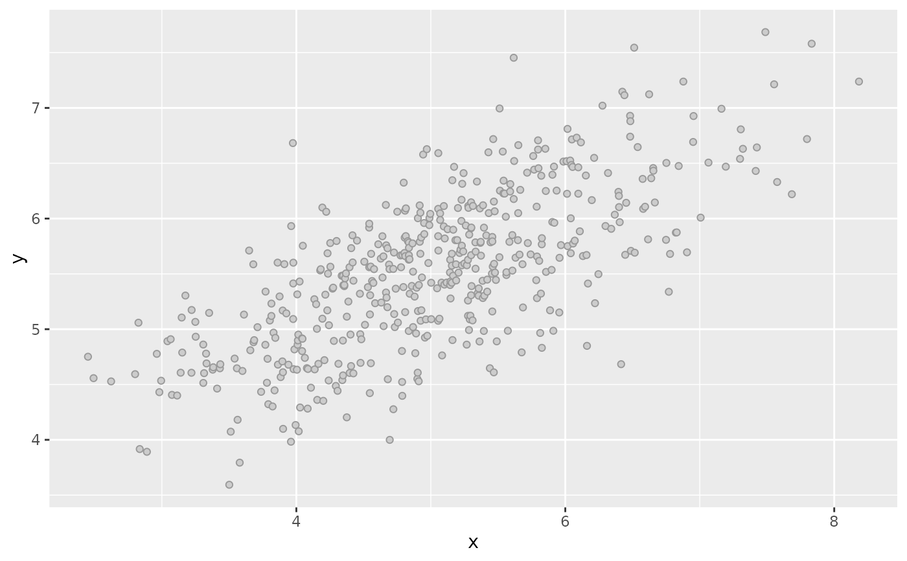
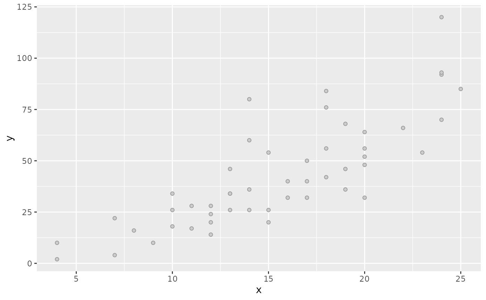

Generate data sets to apply regression methods
Examples
df <- sim_xy()
df
#> # A tibble: 500 × 2
#> x y
#> <dbl> <dbl>
#> 1 2.45 4.75
#> 2 2.49 4.56
#> 3 2.62 4.53
#> 4 2.80 4.59
#> 5 2.83 5.06
#> 6 2.84 3.92
#> 7 2.89 3.89
#> 8 2.96 4.78
#> 9 2.98 4.43
#> 10 2.99 4.53
#> # ℹ 490 more rows
plot(df)

klassets:::plot.klassets_xy(setNames(cars, c("x", "y")))
